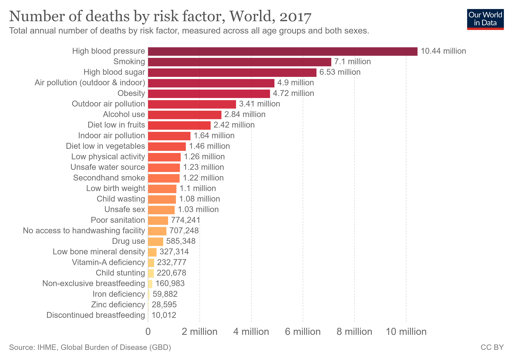

Air pollution kills an estimated seven million people worldwide every year. WHO data shows that 9 out of 10 people breathe air containing high levels of pollutants. WHO is working with countries to monitor air pollution and improve air quality.
From smog hanging over cities to smoke inside the home, air pollution poses a major threat to health and climate. The combined effects of ambient (outdoor) and household air pollution cause about seven million premature deaths every year, largely as a result of increased mortality from stroke, heart disease, chronic obstructive pulmonary disease, lung cancer and acute respiratory infections.
More than 80% of people living in urban areas that monitor air pollution are exposed to air quality levels that exceed WHO guideline limits, with low- and middle-income countries suffering from the highest exposures, both indoors and outdoors.
Air pollution is responsible for 5 million deaths each year
Air pollution – the combination of outdoor and indoor particulate matter, and ozone – is a risk factor for many of the leading causes of death including heart disease, stroke, lower respiratory infections, lung cancer, diabetes and chronic obstructive pulmonary disease (COPD).
 To go places and do things that have never been done before – that’s what living is all about.The Institute for Health Metrics and Evaluation (IHME) in its Global Burden of Disease study provide estimates of the number of deaths attributed to the range of risk factors for disease.
In the visualization we see the number of deaths per year attributed to each risk factor. This chart is shown for the global total, but can be explored for any country or region using the “change country” toggle.